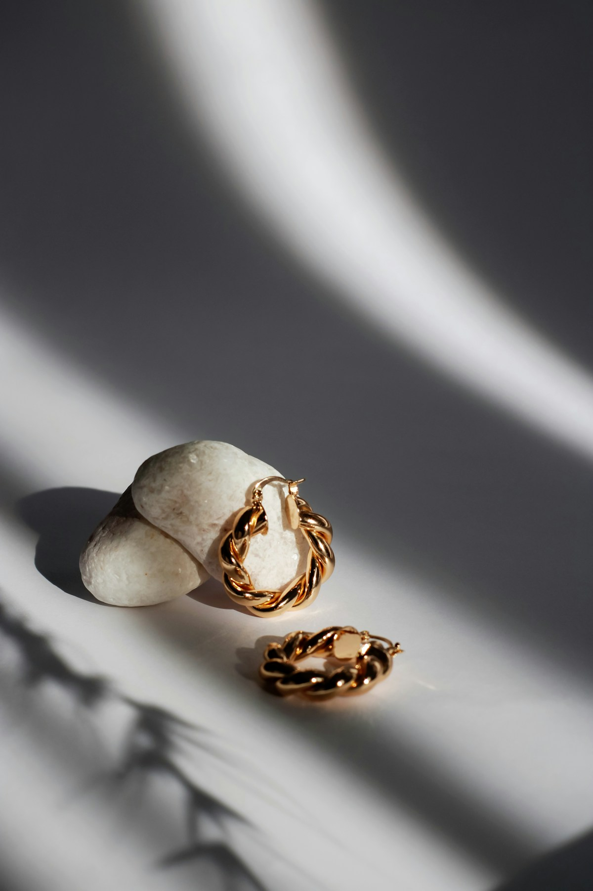
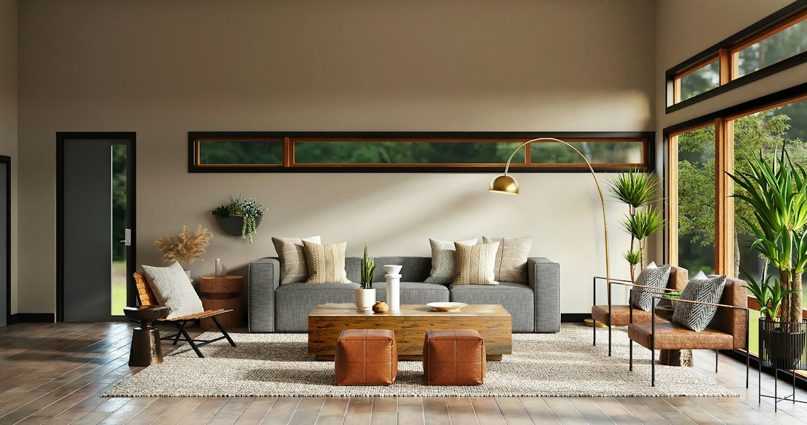
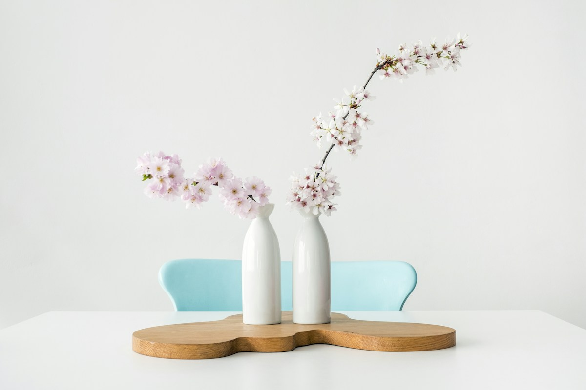

ALABEL ACESSÓRIOSPROPOSTA DE VITRINE DIGITAL · 3 DIREÇÕES ESTRUTURAIS
CONCEITO DIGITAL · 2026Uma experiência à altura
Uma experiência à altura
da marca.
Uma página para apresentar categorias, inspirar descobertas e facilitar a conversa.
MOBILE FIRST · WHATSAPP DIRETO · 3 ESTRUTURAS


01 · Casa viva
Ambiente editorial com história e detalhes da marca.

02 · Curadoria
Navegação por categorias para chegar mais rápido ao que interessa.

03 · Galeria visual
Vitrine visual que aproxima imagem, coleção e contato.
Fotos ilustrativas de referência · Não representam produtos ou estoque confirmado · Informações comerciais a validar